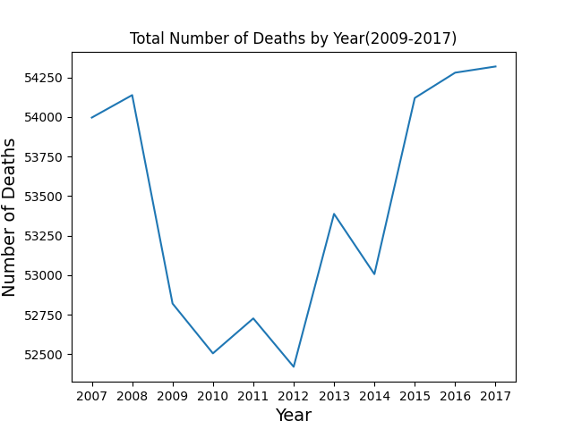
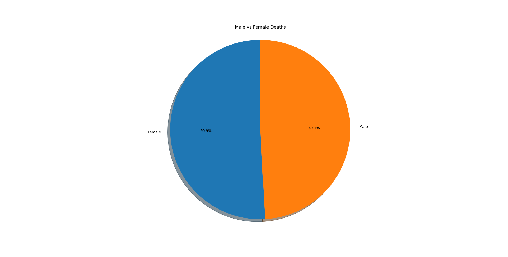
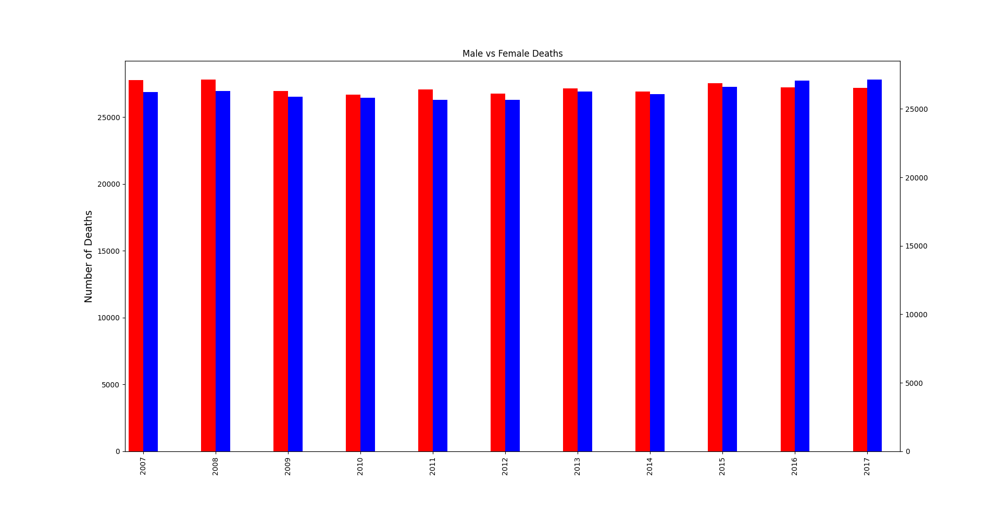
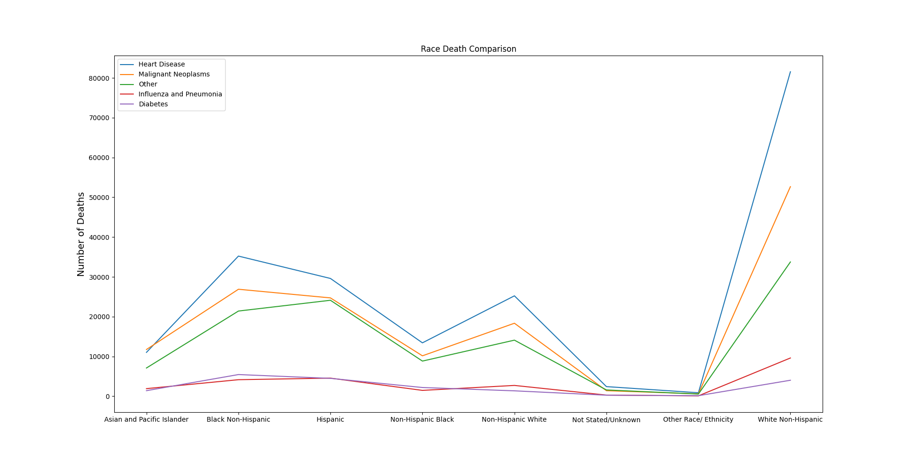
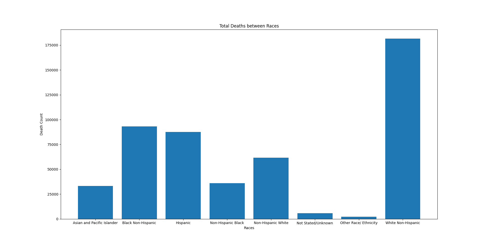

New York City is often romantacized by those who do not live here. The big city where it never sleeps and you have an endless amount of things to do.
Most people do not think about or see what New York City really is. It is a city and a home like every other place. Deaths happen, but deaths happen a lot
more in New York City. It is bound to happen with a city as big and dense as New York City.

As you can see from the line graph above, New York has no less than 50,000 RECORDED deaths per year from 2007 - 2017. Death is inevitable, but it is possible
to prevent and/or delay it. With more data and an indepth look at the leading causes of death, it is possible to locate those who are at risk and what they
are at risk of.
Equal Deaths between Male and Female
Throughout 2007 to 2017, the death ratios between male and female is about 50:50. Overall it is 50.9% Female deaths and 49.1% Male deaths.
If you look at it from year to year you can see that occasionally there would be more Male deaths than Female. However, that is not extremely significant.
I did not expect Male and Female deaths to be neck and neck and expected there to be more Male deaths than Female due to the shorter life expectancy of
the Male population.


Priveleged Population Among the Most Dead?
This Line Graph yielded very shocking results shocking results and is complemented by the bar graph right below it. White Non-Hispanics are considered to be
a privileged population, but despite that they have the highest death count in all causes of deaths and between all the races. I would have expected
a minority race, like Black Non-Hispanic or Hispanic to have a higher death count than White Non-Hispanics. However, there is a chance that the data
is incorrect due to the Not Stated/Unknown category.


Conclusion
I expected my conclusion to be that the minority groups would need more assistance to diminish their death count, however it seems that it is the privileged
group that needs the assistance. We can tell from the data that most of the causes of deaths are long term illnesses. I believe we can find a solution
to counteract the symptoms and prevent these illnesses. Although people are actively working towards this already, the average person does not take it
seriously until it happens to them.